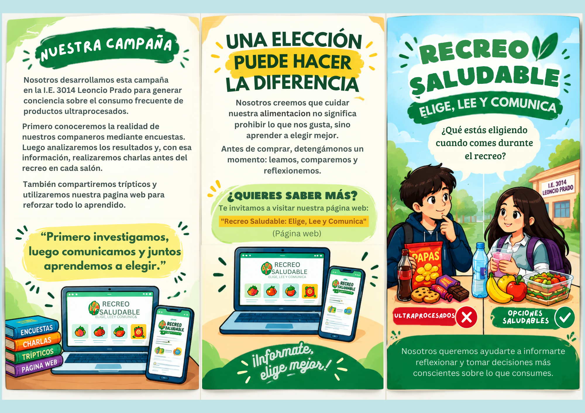
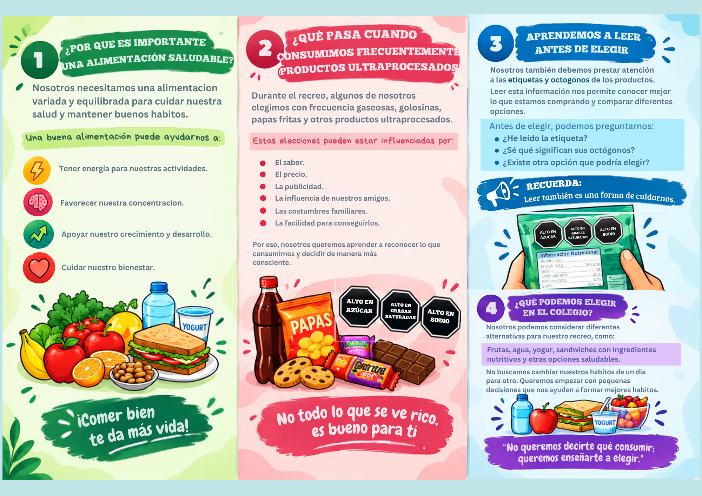

NUESTRO MATERIAL INFORMATIVO
CONOCE NUESTRO TRÍPTICO
Como parte de nuestra campaña sobre alimentación saludable, elaboramos un material informativo para compartir información y ayudar a reflexionar sobre nuestras decisiones durante el recreo.
01
PRIMERA PARTE
PARTE DELANTERA

02
SEGUNDA PARTE
PARTE DEL REVERSO

“Primero investigamos nuestra realidad para después comunicar una solución.”